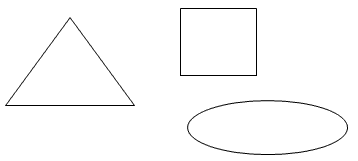

Matura podstawowa z matematyki - kurs - kombinatoryka i prawdopodobieństwo
W tym nagraniu wideo omawiam najbardziej praktyczne metody rozwiązywania zadań z
kombinatoryki oraz klasycznego rachunku prawdopodobieństwa.
Czas nagrania: 64
min.
Ze wsi \(A\) do wsi \(B\) prowadzi \(5\) ścieżek przez las. Na ile sposobów można
odbyć spacer
\(A-B-A\) tak, aby spacer ze wsi \(B\) do wsi \(A\) odbyć
inną ścieżką niż ze wsi \(A\) do wsi \(B\)?
A.\( 5^4 \)
B.\( 5+4 \)
C.\( 4^5 \)
D.\( 5\cdot 4 \)
D
Na rysunku dany jest kwadrat, trójkąt i elipsa. Mamy również do dyspozycji \(8\)
kolorów farb. Na ile różnych sposobów można pomalować wszystkie trzy figury tymi ośmioma kolorami,
tak aby każda figura była w innym kolorze? 
A.\( 27 \)
B.\( 336 \)
C.\( 512 \)
D.\( {8}^{8} \)
B
Flagę, taką jak pokazano na rysunku, należy zszyć z trzech jednakowej szerokości
pasów kolorowej tkaniny. Oba pasy zewnętrzne mają być tego samego koloru, a pas znajdujący się
między nimi ma być innego koloru. Liczba różnych takich flag, które można uszyć, mając do dyspozycji
tkaniny w \( 10 \) kolorach, jest równa
A.\(100 \)
B.\(99 \)
C.\(90 \)
D.\(19 \)
C
Wszystkich liczb naturalnych dwucyfrowych, których obie cyfry są mniejsze od \(5\)
jest
A.\( 16 \)
B.\( 20 \)
C.\( 25 \)
D.\( 30 \)
B
Liczba sposobów, na jakie Ala i Bartek mogą usiąść na dwóch spośród pięciu miejsc w
kinie, jest równa
A.\( 25 \)
B.\( 20 \)
C.\( 15 \)
D.\( 12 \)
B
Ile jest liczb naturalnych czterocyfrowych takich, że w ich zapisie dziesiętnym
występuje jedna cyfra nieparzysta i trzy cyfry parzyste.
\(2125\)
Ile jest liczb naturalnych dwucyfrowych podzielnych przez \(15\) lub \(20\)?
\(9\)
Ile jest liczb naturalnych trzycyfrowych, w których cyfra dziesiątek jest o \(2\)
większa od cyfry jedności?
\(72\)
Wszystkich dodatnich liczb całkowitych czterocyfrowych mniejszych od \(4000\),
zapisanych za pomocą cyfr: \(3, 5, 7, 9\) tak, że żadna cyfra się nie powtarza, jest
A.\( 6 \)
B.\( 24 \)
C.\( 64 \)
D.\( 256 \)
A
Ile jest wszystkich liczb naturalnych trzycyfrowych podzielnych przez \(5\)?
A.\( 90 \)
B.\( 100 \)
C.\( 180 \)
D.\( 200 \)
C
Na ile sposobów można wybrać dwóch graczy spośród \( 10 \) zawodników?
A.\(100 \)
B.\(90 \)
C.\(45 \)
D.\(20 \)
C
Ile jest liczb naturalnych czterocyfrowych o sumie cyfr równej \(2\) ?
A.\( 1 \)
B.\( 2 \)
C.\( 3 \)
D.\( 4 \)
D
Wszystkich liczb naturalnych dwucyfrowych, które są podzielne przez \(6\) lub przez
\(10\), jest
A.\( 25 \)
B.\( 24 \)
C.\( 21 \)
D.\( 20 \)
C
Cztery dziewczynki i sześciu chłopców siedzą na tym samym pniu zwalonego dębu.
Dziewczynki siedzą obok siebie i chłopcy również siedzą obok siebie. Wszystkich możliwych sposobów
posadzenia dzieci w ten sposób jest
A.\( 4\cdot 6 \)
B.\( 2\cdot 4\cdot 6! \)
C.\( 6!\cdot 4! \)
D.\( 2\cdot 4!\cdot 6! \)
D
W pudełku są \(4\) kule białe i \(x\) kul czerwonych. Prawdopodobieństwo
wylosowania kuli czerwonej jest równe \(\frac{3}{5}\), gdy
A.\( x=6 \)
B.\( x=8 \)
C.\( x=10 \)
D.\( x=12 \)
A
Ze zbioru
\(\{1, 2, 3, 4, 5, 6, 7, 8, 9, 10, 11, 12, 13, 14,
15\}\) wybieramy losowo jedną liczbę. Niech \(p\) oznacza prawdopodobieństwo
otrzymania liczby podzielnej przez \(4\). Wówczas
A.\( p\lt \frac{1}{5} \)
B.\( p=\frac{1}{5} \)
C.\( p=\frac{1}{4} \)
D.\( p>\frac{1}{4} \)
B
Ze zbioru liczb \(\{1, 2, 3, 4, 5, 6, 7\}\) losujemy trzy razy po jednej liczbie
bez zwracania. Oblicz prawdopodobieństwo zdarzenia \(A\), polegającego na wylosowaniu liczb, wśród
których nie będzie liczby mniejszej od \(3\).
\(P(A)=\frac{2}{7}\)
Ze zbioru liczb \(\{1, 2, 3, 4, 5, 6, 7\}\) losujemy dwa razy po jednej liczbie ze
zwracaniem. Oblicz prawdopodobieństwo zdarzenia \(A\), polegającego na wylosowaniu liczb, których
iloczyn jest podzielny przez \(6\).
\(P(A)=\frac{17}{49}\)
Rzucamy dwa razy symetryczną sześcienną kostką do gry. Oblicz prawdopodobieństwo
zdarzenia \(A\) polegającego na tym, że liczba oczek w drugim rzucie jest o \(1\) większa od liczby
oczek w pierwszym rzucie.
\(P(A)=\frac{5}{36}\)
Ze zbioru dwucyfrowych liczb naturalnych wybieramy losowo jedną liczbę.
Prawdopodobieństwo otrzymania liczby podzielnej przez \(30\) jest równe
A.\( \frac{1}{90} \)
B.\( \frac{2}{90} \)
C.\( \frac{3}{90} \)
D.\( \frac{10}{90} \)
C
Ze zbioru liczb
\(\{1, 2, 3, 4, 5, 6, 7, 8\}\) wybieramy
losowo jedną liczbę. Liczba \(p\) oznacza prawdopodobieństwo otrzymania liczby podzielnej przez
\(3\). Wtedy
A.\( p\lt 0{,}25 \)
B.\( p=0{,}25 \)
C.\( p=\frac{1}{3} \)
D.\( p>\frac{1}{3} \)
B
Ze zbioru liczb \(\{1, 2, 3, 4, 5, 6, 7, 8, 9, 10,
11\}\) wybieramy losowo jedną liczbę. Oblicz prawdopodobieństwo otrzymania liczby
podzielnej przez \(3\) lub przez \(2\).
\(\frac{7}{11}\)
Ze zbioru liczb naturalnych dwucyfrowych wybieramy losowo jedną liczbę. Oblicz
prawdopodobieństwo otrzymania liczby podzielnej przez \(15\).
\(\frac{1}{15}\)
Rzucamy dwa razy symetryczną sześcienną kostką do gry. Oblicz prawdopodobieństwo
otrzymania iloczynu oczek równego \(5\).
\(\frac{1}{18}\)
Rzucamy dwa razy symetryczną sześcienną kostką do gry. Niech \(p\) oznacza
prawdopodobieństwo zdarzenia, że iloczyn liczb wyrzuconych oczek jest równy \(5\). Wtedy
A.\( p=\frac{1}{36} \)
B.\( p=\frac{1}{18} \)
C.\( p=\frac{1}{12} \)
D.\( p=\frac{1}{9} \)
B
Rzucamy dwa razy symetryczną sześcienną kostką do gry. Prawdopodobieństwo
dwukrotnego otrzymania pięciu oczek jest równe
A.\( \frac{1}{6} \)
B.\( \frac{1}{12} \)
C.\( \frac{1}{18} \)
D.\( \frac{1}{36} \)
D
Ze zbioru liczb
\(\{1,2,3,4,6,8,12,14,15\}\) wybieramy
losowo jedną liczbę. Prawdopodobieństwo, że wybierzemy liczbę, której dzielnikiem jest liczba \(3\),
wynosi:
A.\( \frac{5}{9} \)
B.\( \frac{4}{9} \)
C.\( \frac{1}{3} \)
D.\( \frac{2}{3} \)
B
W pudełku są \(4\) kule białe i \( x \) kul czerwonych. Prawdopodobieństwo
wylosowania kuli czerwonej jest równe \( \frac{3}{5} \), gdy
A.\(x=6 \)
B.\(x=8 \)
C.\(x=10 \)
D.\(x=12 \)
A
Spośród dodatnich liczb dwucyfrowych losujemy kolejno bez zwracania dwie liczby.
Oblicz prawdopodobieństwo wylosowania dwóch liczb parzystych.
\(\frac{22}{89}\)
Jacek rzucił pięć razy symetryczną sześcienną kostką do gry. Liczba wyrzuconych
oczek wynosiła kolejno \(1, 2, 3, 4, 5\). Prawdopodobieństwo, że w szóstym rzucie wypadnie \(6\)
oczek jest równe:
A.\(1 \)
B.\(0 \)
C.\(\frac{5}{6} \)
D.\(\frac{1}{6} \)
D
Ze zbioru liczb \( {1, 2, 3, 4, 5, 6} \) losujemy dwa razy po jednej liczbie bez
zwracania. Oblicz prawdopodobieństwo zdarzenia polegającego na tym, że suma wylosowanych liczb jest
liczbą podzielną przez \( 3 \).
\(\frac{1}{3}\)
Rzucamy trzy razy symetryczną monetą. Prawdopodobieństwo otrzymania co najmniej
jednej reszki jest równe
A.\(\frac{7}{8} \)
B.\(\frac{1}{2} \)
C.\(\frac{1}{4} \)
D.\(\frac{1}{8} \)
A
Ze zbioru liczb {1, 2, 3, 4, 5, 6, 7, 8} losujemy dwa razy po jednej liczbie ze
zwracaniem. Oblicz prawdopodobieństwo zdarzenia \( A \), polegającego na wylosowaniu liczb, z
których pierwsza jest większa od drugiej o \(4\) lub \(6\).
\(P(A)=\frac{3}{32}\)
Zbiór \( M \) tworzą wszystkie liczby naturalne dwucyfrowe, w zapisie których
występują dwie różne cyfry spośród: \( 1, 2, 3, 4, 5 \). Ze zbioru \( M \) losujemy jedną liczbę,
przy czym każda liczba z tego zbioru może być wylosowana z tym samym prawdopodobieństwem. Oblicz
prawdopodobieństwo, że wylosujemy liczbę większą od \( 20 \), w której cyfra dziesiątek jest
mniejsza od cyfry jedności.
\(\frac{3}{10}\)
Rzucamy cztery razy symetryczną monetą. Co jest bardziej prawdopodobne: wyrzucenie
jednej reszki czy wyrzucenie orła w co drugim rzucie?
Bardziej prawdopodobne jest wyrzucenie jednej reszki
Doświadczenie losowe polega na dwukrotnym rzucie symetryczną sześcienną kostką do
gry. Oblicz prawdopodobieństwo zdarzenia \(A\) polegającego na tym, że w pierwszym rzucie otrzymamy
parzystą liczbę oczek i iloczyn liczb oczek w obu rzutach będzie podzielny przez \(12\). Wynik
przedstaw w postaci ułamka zwykłego nieskracalnego.
\(P(A)=\frac{1}{6}\)
W pojemniku umieszczono \(50\) drewnianych klocków, przy czym każdy klocek ma
kształt sześcianu lub kuli, oraz każdy klocek jest czerwony lub niebieski. Wiadomo, że w pojemniku
znajduje się dokładnie \(15\) czerwonych sześcianów, \(18\) klocków niebieskich i \(31\) klocków
mających kształt kuli. Z pojemnika losowo wybieramy jeden klocek. Oblicz prawdopodobieństwo, że
wylosowany klocek jest niebieską kulą?
\(\frac{7}{25}\)
W urnie jest \(6\) kul oznaczonych kolejnymi cyframi od \(1\) do \(6\).
Doświadczenie losowe polega na dwukrotnym losowaniu jednej kuli, przy czym po pierwszym losowaniu
kula nie wraca do urny. Cyfra, jaką jest oznaczona pierwsza wylosowana kula, jest cyfrą jedności, a
cyfra na drugiej kuli jest cyfrą dziesiątek liczby dwucyfrowej. Oblicz prawdopodobieństwo zdarzenia
\(A\) polegającego na tym, że otrzymana liczba jest taką liczbą podzielną przez \(3\), której cyfra
jedności jest nie większa niż \(4\).
\(P(A)=\frac{7}{30}\)